- Introduction of Fukui Manufacturing
Introduction of Fukui Manufacturing
As a specialized safety valve manufacturer, Fukui has reliable capacity and our own devices that allow us to undertake material procurement, machining, assembling and inspections in our own factory.
We base our production on “Integrated Manufacturing”, which is a keyword to provide optimum service to our customers and deliver security and safety for all over the world.
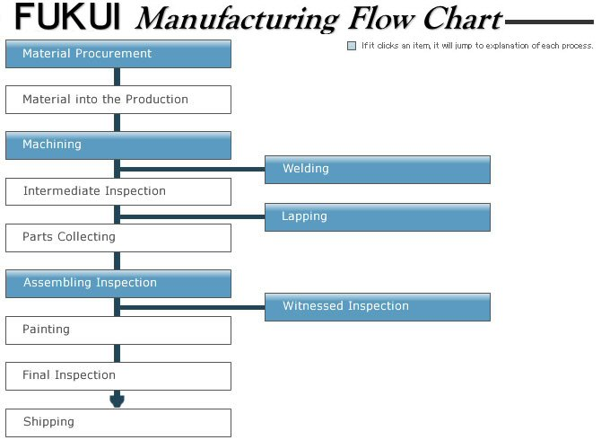
Material Procurement
In recent market expanding, customers have started requiring high quality materials as well as special materials, such as duplex stainless steel and special steel, which are not widely distributed on the market.
In order to meet customer’s demands, Fukui has organized a system to procure such special materials from domestic and overseas. In addition, we have a flexibility to meet the requirement of special inspections.
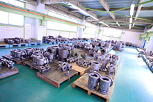
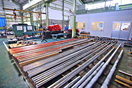
Machining
Fukui has a variety of machining tools such as NC lathe, general-propose lathe and large scale machining center. The machining or dimensional accuracy which affect on safety valve’s operation have been finished with high precision by our trained craftsmen.
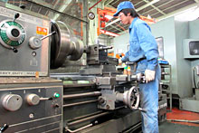
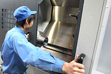
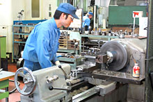
Welding
A hard material called Stellite has been welded on safety valve seat surfaces. Welding stellite makes seat surfaces harder so that they can withstand the impact when safety valve activates.
Welding is particularly important process for manufacturing our safety valve.
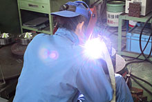
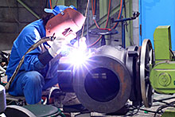
Lapping (Mirror Finish)
Lapping ( Mirror Finish ) is one of the processes to make seat surfaces
flat and wringing so that seat leakage might not occur with high probability.
Not only machine lapping but also hand lapping is necessary depends on
the shapes of the parts to stop the fluid.
The finish precision of hand lapping needs a skill of highly skilled worker.
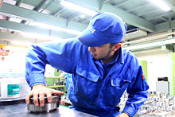
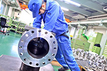
Assembling ･ Inspections
All safety valves manufactured by Fukui are assembled and inspected in our own shop.
For popping inspection, we provide Nitrogen gas, steam and water and inspect in a corresponding actual fluid property.
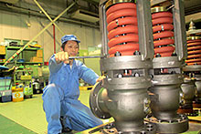
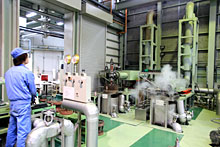
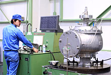
Witness inspection
To confirm the performance of safety valves, witness inspection is carried out if required. Many inspectors from all over the world have visited our company and been satisfied with the high performance quality.
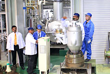
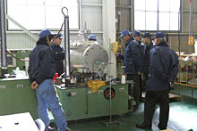